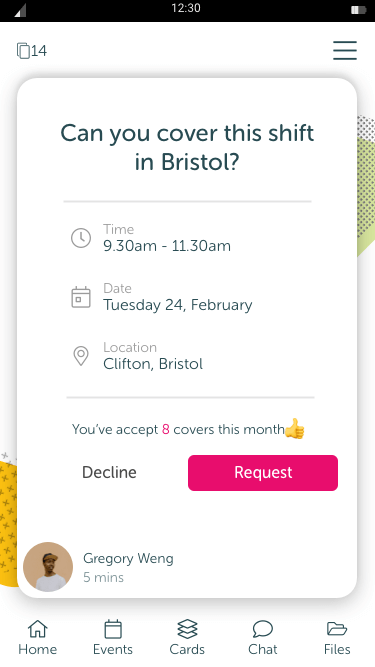

The gist
When it came to organising events like cover, training and meetings in the app, our users had voiced their frustrations many times. After some initial interviews, it was obvious that finding events they cared about was too difficult. After some analysis and planning, I tested multiple iterations and included the feedback in our final solution. Finally, I created animated and static visuals for the development team to use.
Skills used
Research and analysis, Miro Wireframing, InVision Prototyping, User testing, Sketch, After effects

A typical cover card.